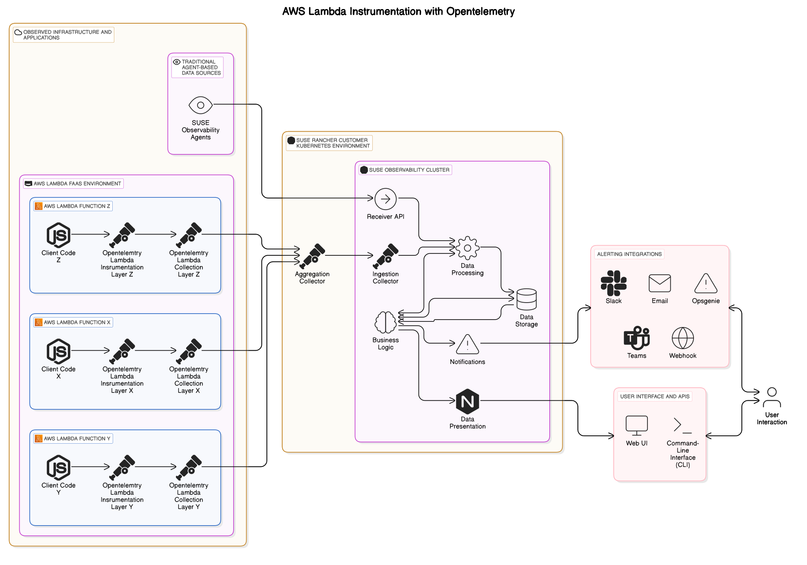

|
Este documento ha sido traducido utilizando tecnología de traducción automática. Si bien nos esforzamos por proporcionar traducciones precisas, no ofrecemos garantías sobre la integridad, precisión o confiabilidad del contenido traducido. En caso de discrepancia, la versión original en inglés prevalecerá y constituirá el texto autorizado. |
Auto-instrumentación de una función Lambda de NodeJS.
Introducción
Este documento te guía a través de la auto-instrumentación de funciones Lambda de NodeJS utilizando OpenTelemetry. La auto-instrumentación simplifica el proceso de añadir observabilidad a tus funciones Lambda al capturar automáticamente métricas de rendimiento e información de trazado.
Requisitos previos
Antes de comenzar, asegúrate de tener lo siguiente:
-
Función AWS Lambda: La función que deseas instrumentar.
-
OpenTelemetry SDK: Instalado en tu función Lambda.
-
Collector de OpenTelemetry: Desplegado y configurado.
-
SUSE Observability: Una cuenta con SUSE Observability donde enviarás tus datos de telemetría.
-
Memoria: Suficiente memoria para ejecutar la función Lambda, incluida la instrumentación.
Valores proporcionados por el entorno
OpenTelemetry depende de varios valores de configuración para funcionar correctamente. Estos valores controlan aspectos como la recolección de datos, la exportación y la comunicación con sistemas backend. Para que tu despliegue de OpenTelemetry sea flexible y adaptable a diferentes entornos, puedes proporcionar estas configuraciones a través de variables de entorno. Este enfoque ofrece varios beneficios:
-
Configuración dinámica: Ajusta fácilmente la configuración sin cambios en el código.
-
Configuraciones Específicas del Entorno: Configura OpenTelemetry de manera diferente para desarrollo, pruebas y producción.
-
Gestión de Secretos: Almacena de forma segura información sensible como claves API.
Para la configuración de OpenTelemetry descrita en esta documentación, necesitarás definir las siguientes variables de entorno:
-
VERBOSITY: Controla el nivel de detalle en los registros de OpenTelemetry. -
OTLP_API_KEY: Autentica tu función Lambda para enviar datos a SUSE Observability. -
OTLP_ENDPOINT: Especifica la dirección de tu instancia de SUSE Observability. -
OPENTELEMETRY_COLLECTOR_CONFIG_FILE: Apunta al archivo de configuración para el OpenTelemetry Collector. -
AWS_LAMBDA_EXEC_WRAPPER: Configura el entorno de ejecución de Lambda para utilizar el controlador de OpenTelemetry. -
OTLP_INSTR_LAYER_ARN: Proporciona el ARN (Nombre de Recurso de Amazon) de la capa de instrumentación de OpenTelemetry, que añade los componentes necesarios para la auto-instrumentación. -
OTLP_COLLECTOR_LAYER_ARN: Proporciona el ARN de la capa del colector de OpenTelemetry, que es responsable de recibir, procesar y exportar datos de telemetría.
Consideraciones Importantes:
-
Punto Final GRPC: El
OTLP_ENDPOINTdebe especificar el punto final gRPC de tu instancia de SUSE Observability sin ningún prefijohttpohttps. Utiliza el puerto 443 para una comunicación segura. -
Capas Específicas de la Región: Las capas de Lambda están limitadas por región. Asegúrate de que los ARNs que utilizas para
OTLP_INSTR_LAYER_ARNyOTLP_COLLECTOR_LAYER_ARNcoincidan con la región de AWS donde está desplegada tu función Lambda. -
Coincidencia de Arquitectura: La capa del OpenTelemetry Collector es específica de la arquitectura. Elige el ARN correcto para la arquitectura de tu función Lambda (por ejemplo,
amd64oarm64).
Un ejemplo completo: ten en cuenta que necesitas introducir tus propios valores.
VERBOSITY: "normal"
OTLP_API_KEY: "<your api key for sending data to SUSE Observability here>"
OTLP_ENDPOINT: "<your-dns-name-for-suse-observability-here>:443"
OPENTELEMETRY_COLLECTOR_CONFIG_FILE: "/var/task/collector.yaml"
AWS_LAMBDA_EXEC_WRAPPER: "/opt/otel-handler"
OTLP_INSTR_LAYER_ARN: "arn:aws:lambda:<aws-region>:184161586896:layer:opentelemetry-nodejs-0_11_0:1"
OTLP_COLLECTOR_LAYER_ARN: "arn:aws:lambda:<aws-region>:184161586896:layer:opentelemetry-collector-<amd64|arm64>-0_12_0:1"El archivo collector.yaml
La configuración de colección de OTEL establece cómo deben distribuirse los datos recopilados. Esto se realiza en el archivo collector.yaml ubicado en el directorio src, donde se pueden encontrar los archivos Lambda. A continuación se muestra un ejemplo de archivo collector.yaml.
# collector.yaml in the root directory
# Set an environemnt variable 'OPENTELEMETRY_COLLECTOR_CONFIG_FILE' to
# '/var/task/collector.yaml'
receivers:
otlp:
protocols:
grpc:
http:
exporters:
debug:
verbosity: "${env:VERBOSITY}"
otlp/stackstate:
headers:
Authorization: "SUSEObservability ${env:OTLP_API_KEY}"
endpoint: "${env:OTLP_ENDPOINT}"
service:
pipelines:
traces:
receivers: [otlp]
exporters: [debug, otlp/stackstate]
processors: []
metrics:
receivers: [otlp]
exporters: [debug, otlp/stackstate]
processors: []Ten en cuenta que este collector se utiliza para enviar los datos a un siguiente collector que luego se utiliza para muestreo de cola, agregación de métricas, etc., antes de enviar los datos a SUSE Observability. Este segundo collector también necesita ejecutarse en el entorno del cliente.
Dependiendo de la funcionalidad deseada, o en función de factores como los volúmenes de datos generados por funciones Lambda instrumentadas de esta manera, se pueden configurar collectors para procesamiento por lotes, muestreo de cola y otras técnicas de preprocesamiento para reducir el impacto en SUSE Observability.
Sigue la guía de inicio para configurar un collector que envíe los datos a SUSE Observability. La personalización de la configuración del collector para establecer muestreo, filtrado, etc., se puede encontrar en nuestra documentación del collector.

Package.json
Asegúrate de añadir "@opentelemetry/auto-instrumentations-node": "^0.55.2",+ a package.json y ejecutar npm install para añadir las bibliotecas de cliente de auto-instrumentación a tu función Lambda de NodeJS.
Solución de problemas
Tiempos límite
Si la adición de las capas OTEL Lambda produce funciones Lambda que agotan el tiempo de espera (comprobar los registros podría indicar que se pidió al collector que se apagara mientras aún estaba ocupado, por ejemplo, al ver la siguiente entrada de registro):
{
"level": "info",
"ts": 1736867469.2312617,
"caller": "internal/retry_sender.go:126",
"msg": "Exporting failed. Will retry the request after interval.",
"kind": "exporter",
"data_type": "traces",
"name": "otlp/stackstate",
"error": "rpc error: code = Canceled desc = context canceled",
"interval": "5.125929689s"
}poco después de recibir la instrucción de apagado:
{
"level": "info",
"ts": 1736867468.4311068,
"logger": "lifecycle.manager",
"msg": "Received SHUTDOWN event"
}Lo anterior indica que los recursos asignados a la función Lambda no son suficientes para permitir su ejecución, así como la carga adicional añadida por la instrumentación OTEL. Para remediar esto, se pueden ajustar la asignación de memoria y los ajustes de tiempo de espera de la función Lambda según sea necesario para permitir que termine su trabajo, a la vez que se asegura el éxito en la recolección de telemetría.
Intenta modificar las propiedades MemorySize y TimeOut de las funciones Lambda que están fallando:
MemorySize: 256
Timeout: 25Ten en cuenta que la asignación de memoria predeterminada es de 128 MB.
Ten en cuenta que el incremento de memoria es de 128 MB.
Ten en cuenta que el tiempo de espera es un valor entero que denota segundos.
Autenticación y filtrado de IP de origen
Si te encuentras con error 403 Unauthorized al enviar datos del collector a tu clúster, o a cualquier collector de preprocesamiento o proxy, verifica que la dirección IP de origen de la gateway NAT de la VPC coincida con lo que está en la lista blanca por el ingreso del collector, también verifica que el mecanismo de autenticación elegido coincida con el origen y el destino, y que las credenciales (secretos, etc.) estén configuradas correctamente.
Para más información sobre cómo configurar la autenticación para el colector de OpenTelemetry, por favor consulta la documentación oficial.
Referencias
Documentación de auto-instrumentación → https://opentelemetry.io/docs/faas/lambda-auto-instrument/
Documentación del colector → https://opentelemetry.io/docs/faas/lambda-collector/
Página de lanzamientos de GitHub para encontrar los últimos ARNs → https://github.com/open-telemetry/opentelemetry-lambda/releases
Configuración del exportador OTLP → https://opentelemetry.io/docs/languages/sdk-configuration/otlp-exporter/